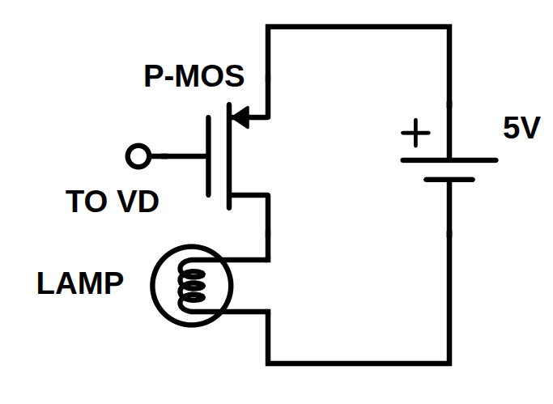
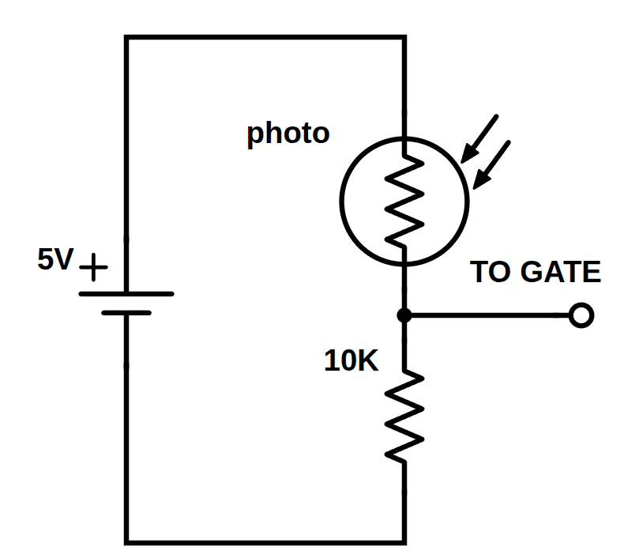
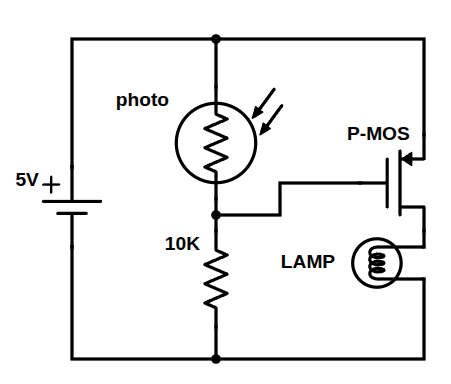
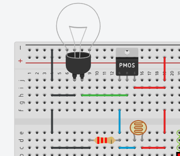

Making an Automatic Light Switch#
Ever wonder how the lamp posts on the street turn on when it gets dark outside? There isn’t a person walking around flipping a giant switch at dusk, it all happens automatically! Even better, that entire automated process can be designed and built on a breadboard in just a few minutes with a handful of inexpensive parts.
As electrical and computer engineers, we have all kinds of tools at our disposal to let electronic systems interact with their environment. Most of the time, that starts with sensors.
In this workshop, we use a photoresistor (a sensor that changes its electrical resistance depending on how bright it is) paired with a transistor (an electronic switch). When the light level drops, our circuit detects the change and automatically turns a light on.
This project is a quick, hands-on way to introduce high schoolers and first-year engineering students to fundamental ECE concepts: reading circuit schematics, understanding voltage dividers, using transistors as solid-state switches, and translating paper diagrams onto a real breadboard.
Instructor Overview & Classroom Notes#
Target Audience: High school physics / STEM clubs, introductory engineering workshops, or first-year university engineering labs.
Estimated Time: 45 to 60 minutes.
Core Concepts:
Sensors & variable resistance (photoresistors / LDRs).
Voltage division and Kirchoff’s Voltage Law (\(V = I \cdot R\)).
MOSFETs operating as electronic switches (Gate threshold voltage \(V_{GS}\)).
Translating a circuit schematic into physical breadboard connections.
There is no programming required for this build! That makes it a good pure hardware lab for students who may be intimidated by coding, or as a standalone electronics module before diving into microcontrollers like Arduinos. This can also be done after students have a bit of programming experience to show that we don’t always need to use a microcontroller to do basic tasks.
Materials & Tools#
You can source these components in bulk for less than a couple of dollars per student station.
Electronics (Per Student or Pair)#
1x Half-Size Solderless Breadboard
1x N-Channel MOSFET Transistor (e.g., IRLZ44N, 2N7000, or similar logic-level N-channel MOSFET)
1x Photoresistor (LDR) (e.g., standard 5mm GL5528)
1x \(\text{approx }5\text{ k}\Omega\) Resistor (Have a few values available between 1k and 10k if you want students to tune sensitivity) This can also be done with a potentiometer if you want simpler variation.
1x LED or Low-Voltage Lamp (standard 5mm LED)
1x If using an LED: \(220\,\Omega\) Current-Limiting Resistor
1x 5V Power Source (I reccomend a stripped USB cable with the red and black wires extended with jumper wire, and a USB power block like what you use to charge your phone)
6–10x Jumper Wires (male-to-male)
How It Works: Breaking Down the Sub-Circuits#
When looking at a full schematic for the first time, students often feel overwhelmed. The secret to making circuit design approachable is breaking complex systems into sub-circuits.
To make a switch that turns on when it gets dark, we only need two sub-circuits working together:
The Switch Circuit: Uses a transistor to turn the lamp on and off.
The Sensor Circuit: Uses a voltage divider with a photoresistor to monitor ambient light.
Sub-Circuit 1: The P-Channel MOSFET Switch#
A mechanical switch requires physical movement to open or close a circuit. A transistor, on the other hand, is an electrical switch with no moving parts.
In our setup, we use a P-Channel MOSFET (pMOS). A MOSFET has three terminals:
Source (S): Connected to the positive power rail (\(+5\text{V}\)).
Gate (G): The control input. Think of this as the valve handle.
Drain (D): Where current flows out to our load (the lamp/LED) on its way to Ground.
A P-channel MOSFET turns on based on the voltage difference between its Gate and Source (\(V_{GS} = V_{\text{Gate}} - V_{\text{Source}}\)):
Since the Source is tied directly to \(+5\text{V}\), \(V_{GS} = V_{\text{Gate}} - 5\text{V}\).
When the Gate is pulled high (near \(+5\text{V}\)): \(V_{GS} \approx 0\text{V}\). The transistor is OFF, and no current flows to the lamp.
When the Gate is pulled low (toward \(0\text{V}\)): \(V_{GS}\) drops toward \(-5\text{V}\). Once \(V_{GS}\) drops below the negative threshold voltage (\(V_{GS(\text{th})}\)), the channel opens up. The transistor turns ON, lighting up the lamp.

Sub-Circuit 2: The Photoresistor Voltage Divider#
Our sensor is a photoresistor, whose resistance changes depending on ambient light:
In bright light: Its resistance drops significantly (down to a few hundred or even tens of Ohms).
In the dark: Its resistance skyrockets (often to hundreds of thousands of Ohms or Mega-Ohms).
Because transistors react to voltage at their Gate rather than raw resistance, we arrange the photoresistor into a voltage divider.
By placing the photoresistor between the \(5\text{V}\) rail and our sense node, and a fixed resistor between the sense node and Ground (\(0\text{V}\)), the voltage at the center node is determined by:
When it’s light out: \(R_{\text{photo}}\) is tiny compared to \(R_{\text{fixed}}\). Most of the voltage drop occurs across \(R_{\text{fixed}}\), keeping \(V_{\text{Gate}}\) high.
When it gets dark: \(R_{\text{photo}}\) shoots way up, taking almost all the voltage drop and pulling \(V_{\text{Gate}}\) down close to zero.
(Teacher tip: If you only have N-channel MOSFETS, you can still do this, but the logic gets flipped. You may want to swap the position of the fixed resistor and the photoresistor so that the lamp turns off when it gets dark instead of the lamp turning on when it is bright!)

Combining the Sub-Circuits#
When we connect the output of the voltage divider directly into the Gate of our MOSFET, the two sub-circuits merge into one unified, automatic system:

This may look complicated at first glance, but with a little practice, reading schematics like this will quickly become second nature to your students!
Breadboard Assembly Guide#
When teaching this build especially for people new to breadboards, laying everything out randomly on the board makes debugging really tricky, and conceptually hard to follow. Instead, I reccomend taking advantage of the breadboard’s center divider (the bridge) to physically separate our two sub-circuits:
Side A (e.g., Top Rows / Columns f–j): Hosts Sub-Circuit 1 (the MOSFET switch and the lamp).
Side B (e.g., Bottom Rows / Columns a–e): Hosts Sub-Circuit 2 (the Photoresistor voltage divider sensor).
The “Bridge” Jumper: A single wire jumping across the center divider ties the sensor output to the transistor’s gate control.

Step 1: Set Up Power Rails#
Connect your 5V power source positive lead (\(+5\text{V}\)) to the red \((+)\) rail.
Connect your ground lead to the blue \((-)\) rail.
If your breadboard has power rails on both sides, use jumper wires to bridge the top and bottom \((+)\) rails together and the top and bottom \((-)\) rails together so both sides have access to power and ground.
Step 2: Build Sub-Circuit 1 — The MOSFET Switch (One Side of the Bridge)#
Work entirely on one side of the center trough (for example, rows in columns f–j):
Insert the P-Channel MOSFET: Plug the three legs of the pMOS into three adjacent rows across the bridge (for example, rows 10, 11, and 12).
Note which pin is Gate (G), Drain (D), and Source (S) according to your specific component’s datasheet. (On common TO-220 packages, the pinout from left-to-right facing the label is typically 1: Gate, 2: Drain, 3: Source).
Connect Source to Power: Run a jumper wire from the row with the Source pin directly to the \(+5\text{V}\) rail.
Wire the Lamp / LED Load:
Run a jumper wire or lead from the Drain pin row to a new open row on this same side of the board.
If using a lamp:
Insert one lead of the lamp into the same row that the jumper wire ends in. Place the other lead in an unused row.
Use a jumper wire to connect the other lead of the lamp to the Ground \((-)\) rail.
If using an LED:
If using an LED, Insert the long lead (anode) of your LED into that row.
Place a current-limiting resistor (\(100\,\Omega\) to \(220\,\Omega\)) from the short lead (cathode) of the LED directly to the Ground \((-)\) rail.
Step 3: Build Sub-Circuit 2 — The Voltage Divider Sensor (Across the Bridge)#
Now move across the central dividing trench to the opposite set of rows (columns a–e):
Pick a dedicated tie-point row (e.g., row 15 on the other side of the bridge). This row will serve as our Voltage Divider output junction.
Photoresistor (High Side): Place one leg of the photoresistor into the \(+5\text{V}\) power rail and the other leg into your chosen junction row.
10kΩ Resistor (Low Side): Place one leg of the \(10\text{ k}\Omega\) resistor into that same junction row and the other leg into the Ground \((-)\) rail.
Step 4: Link the Sub-Circuits Across the Bridge#
Take a single jumper wire.
Plug one end into the Voltage Divider junction row (on the sensor side).
Stretch it across the central bridge and plug the other end directly into the row containing the Gate pin of the MOSFET (on the switch side).
That single jumper carries the sensing voltage from the photoresistor divider directly into the control terminal of the transistor switch!
Step 5: Power On and Test#
Turn on or plug in your 5V power supply.
In regular room lighting, the lamp/LED should remain completely off.
Cup your hand or place your thumb over the photoresistor to cast a deep shadow. The light should immediately turn on!
Remove your hand to let light back in—the light turns right back off, just like a street lamp at sunrise.
Classroom Troubleshooting Tips#
The light stays on all the time:
The room may already be too dark for the fixed resistor value chosen. Try replacing the fixed resistor with a smaller value, or swap in a \(10\text{ k}\Omega\text{--}50\text{ k}\Omega\) potentiometer so students can adjust the threshold for your specific classroom lighting.
Check the transistor pinout. Connecting Drain and Source backward can cause current to flow through the MOSFET’s internal body diode regardless of gate voltage.
The light never turns on:
Verify that the power rails actually have voltage using a multimeter.
Check the LED orientation if you are using an LED instead of an incandescent bulb (longer leg = anode / positive).
Ensure the Gate pin is receiving adequate voltage when the sensor is covered.
Adjust the resistor/potentiometer value of the voltage divider
What’s Next? (Extending the Lesson)#
Street lamps in real neighborhoods work on this exact same sensing principle, but the real-world execution is slightly different:
Relays vs. Transistors: In an actual municipal street-lamp operating on high-voltage AC mains (\(120\text{V}\) or \(240\text{V}\)), you wouldn’t use a small breadboard transistor. Instead, you would likely use an electromechanical or solid-state relay.
Discussion Question for Students: What are the advantages and trade-offs of using a mechanical relay versus a semiconductor transistor when controlling high-power devices?
Adding Hysteresis: Have students notice if their light flickers right around the transition point at dusk. In engineering, we use feedback circuits (like Schmitt triggers or op-amps) to add hysteresis, preventing flickering when the light is right on the edge of the threshold.
You can pick up all of these inexpensive components at your favorite online electronics shop—or come visit us at Purdue University’s Elmore Family School of Electrical and Computer Engineering, where we can show you everything you need to know to build systems like this and so much more!